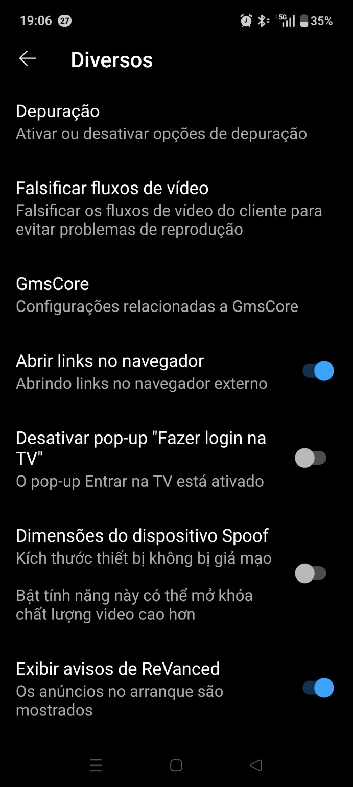
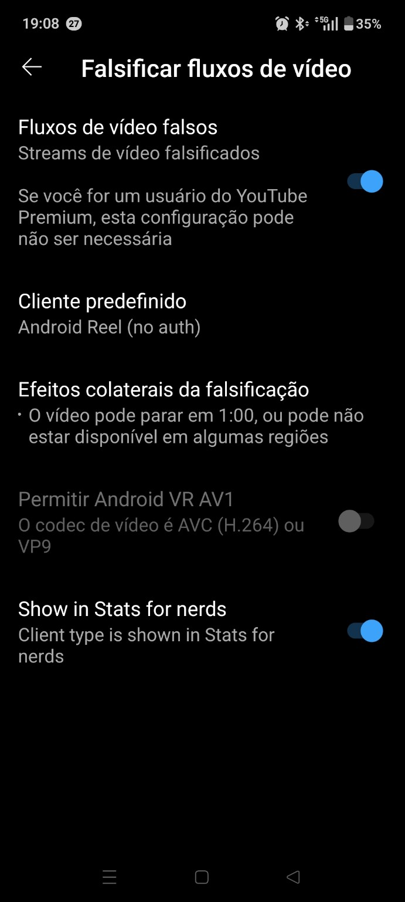
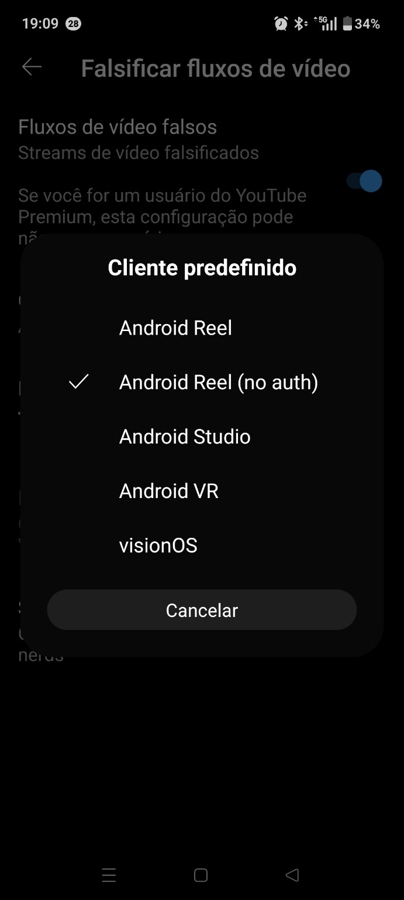

O que está a correr mal?
Pesquisa o erro ou escolhe um caminho. O objetivo é chegar à informação certa sem te perderes pelo manual.
Outros recursos
Progresso, backup e impressão
Projeto independente. Para downloads e componentes, confirma sempre a origem oficial do ReVanced.
Qual é o sintoma?
Escolhe a situação mais próxima. Altera uma variável de cada vez e confirma o resultado antes de continuares.
Procura o problema
Escreve o erro, patch ou funcionalidade. O livro abre logo abaixo; a pesquisa leva-te ao capítulo mais relevante.
35 capítulos no livro
Problemas acompanhados
Consulta problemas reportados, estado, evidência e a ação segura recomendada. Um relato não é automaticamente um bug confirmado.
YouTube parava a 0:55-1:00
Na instalação testada, Android Reel (no auth) estava selecionado. Alterar isoladamente para visionOS resolveu esse caso.



Runbook reproduzível
Progresso: 0%
Official-first
O manual privilegia documentação oficial do ReVanced e documentação primária do Android.